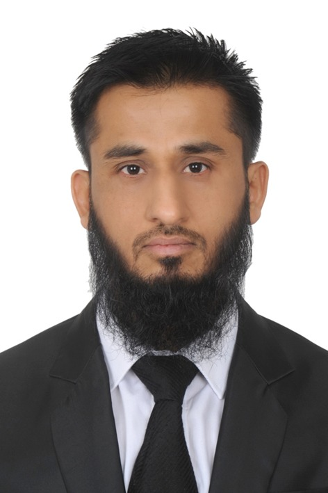
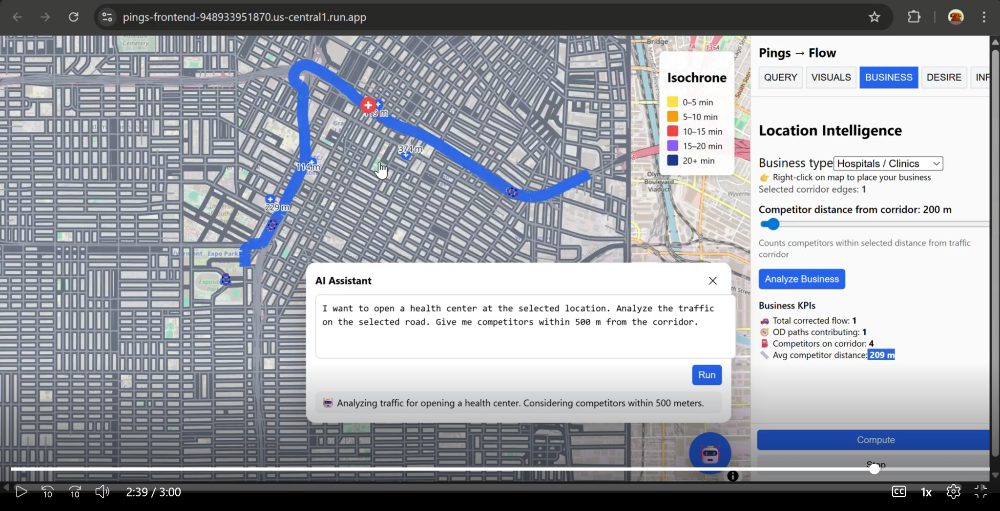
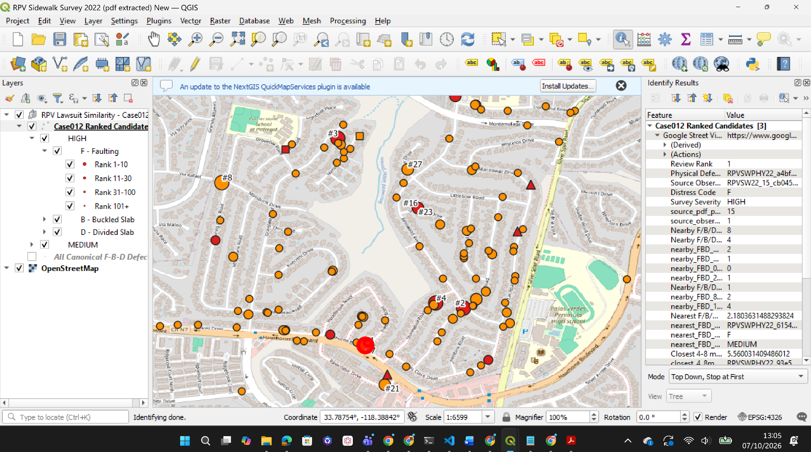

01
AI-Assisted Household Survey
Conversational AI for richer household travel diaries, structured data capture and intelligent follow-up.
View original LinkedIn post ↗I build and apply transportation models, mobility analytics and intelligent automation — combining deep Saudi and Makkah experience with AI, Python and large-scale movement data.

“Makkah is not a new transportation system for me. What is new is the toolbox I can now bring to it.”
I have worked across strategic demand modeling, public transport, Hajj movement, ring roads, corridors, junctions and operational simulation — understanding Makkah as a connected transportation system rather than a collection of isolated projects.
Household and roadside-interview data, VISUM demand modeling and Bus/BRT/LRT planning.
Large-area Makkah network modeling, OD processing and traffic assignment for major infrastructure evaluation.
Strategic and operational modeling connecting demand, turning movements and junction performance.
Public-transport and movement planning under exceptional pilgrimage demand and operating constraints.
Travel-time and attraction-based behavioral modeling for Makkah travel demand.
Interchanges, intersections and simulation work across critical regional connections.
My focus is not AI for its own sake. The goal is better transportation decisions: richer observations, faster workflows, stronger QA/QC and models that are easier to update and validate.
Transportation logic defines the process. Python orchestrates estimation and VISUM execution. AI can accelerate development and analysis. The engineer remains responsible for methodology and judgment.
Conversational AI for richer household travel diaries, structured data capture and intelligent follow-up.
View original LinkedIn post ↗Move beyond reported origins and destinations by capturing and confirming route-choice information.
View original LinkedIn post ↗Monitor coverage, representation, trip rates and modal patterns while fieldwork is still underway.
View original LinkedIn post ↗A double-nested behavioral modeling concept linking destination choice, mode choice and accessibility.
View original LinkedIn post ↗A proposed Python-orchestrated workflow connecting estimation, VISUM, assignment, calibration and 360° validation.
View original LinkedIn post ↗Go beyond matching traffic counts: test whether OD movements and route choices are behaviorally credible.
View original LinkedIn post ↗A scalable mobility-analytics architecture that turns large volumes of GPS observations into transportation intelligence: trips, routes, OD movements and network flows — with an AI interface for asking transportation questions in natural language.
The working application brings network flows, accessibility/location intelligence and conversational analysis into one interface. The AI assistant can translate a natural-language request into analysis actions while the underlying transportation data and engineering logic remain explicit.

A research workflow combining roadway conditions, crash and network evidence, geospatial analysis and historical case information to help screen and investigate potentially hazardous roadway conditions.
The GIS view shows mapped sidewalk-condition observations and ranked candidate locations. The broader workflow is designed to preserve source provenance and keep engineering review central.

AI-based trip-attraction prediction from aerial imagery: research connecting computer vision with transportation demand modeling.
Watch my explanation of the concept and its transportation-modeling motivation.
AI should not replace the transportation engineer. It should help the engineer see more, test faster and focus judgment where it matters most.
Combine traditional models with large-scale observed movement data for OD, route, flow and change detection.
Automate repetitive QA/QC, scenario comparison and screening of model or consultant submissions.
Bring crashes, roadway characteristics and contextual evidence together to identify emerging risk.
The technology has changed. The transportation fundamentals — demand, behavior, networks, calibration, operations and engineering judgment — remain the foundation.
Makkah, Riyadh, Eastern Province, Buraydah, Jizan and national-level studies; strategic models, microsimulation, public transport, TIS and task leadership.
Custom transportation-modeling procedures, model review, automation and decision-support workflows.
Postgraduate AI/ML training followed by applied work in GPS mobility analytics, Python-assisted modeling, LLM concepts and roadway-safety intelligence.